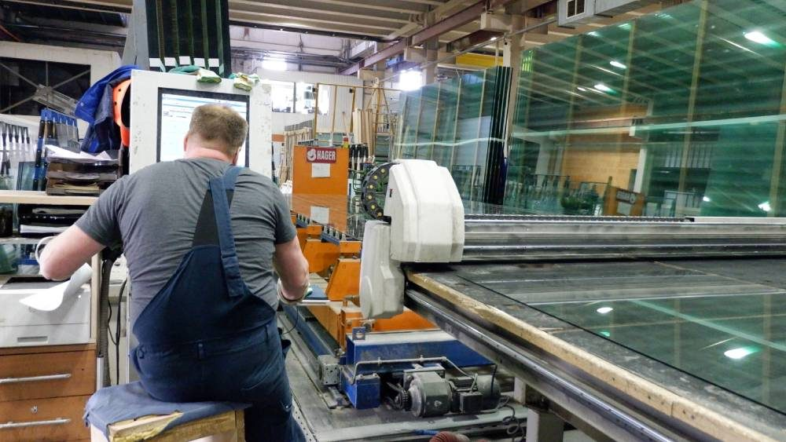
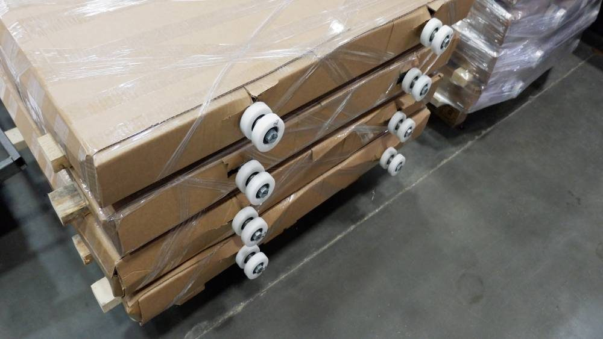
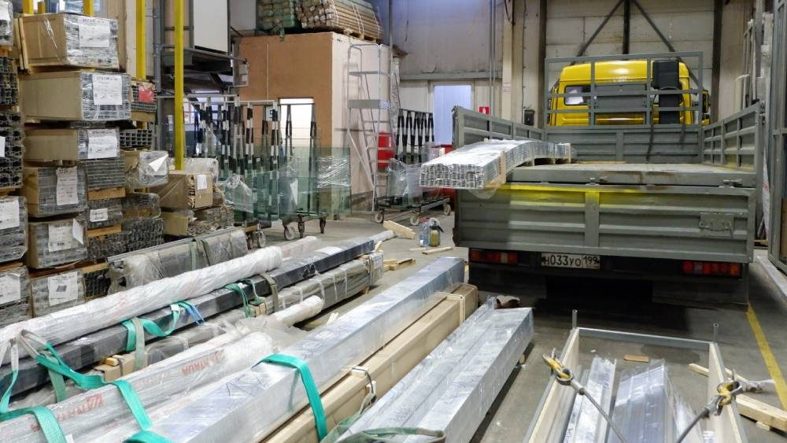
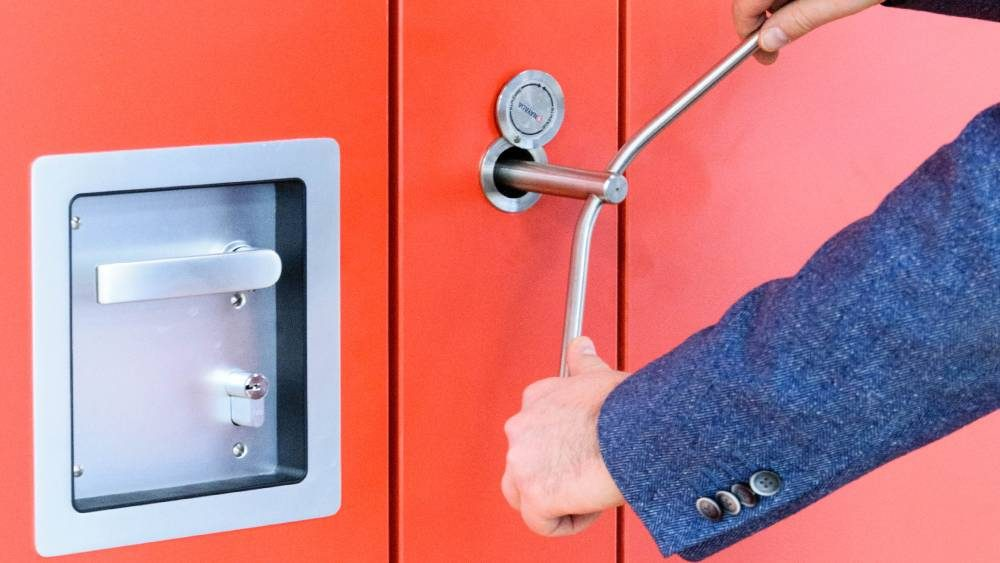
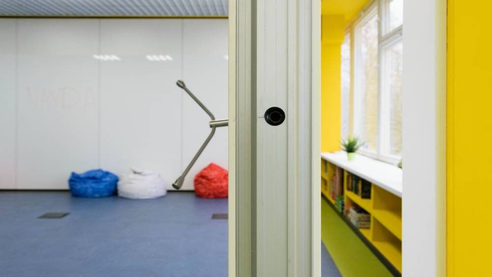
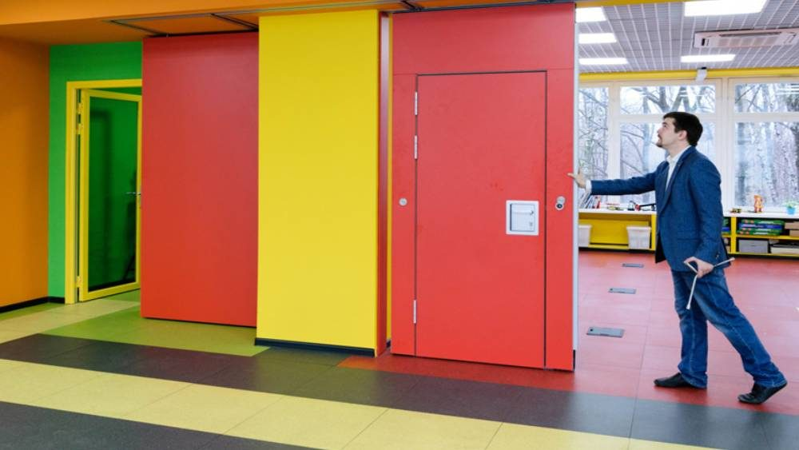

Монтаж и демонтаж перегородок
Подготовка к монтажу и сам монтаж это важная часть установки раздвижных перегородок. Это заключительная часть реализации проекта, на рабочей площадке в помещении Заказчика.
Подготовительные работы перед монтажом
Все необходимые материалы и сами перегородки монтажники SmartWall привозят на объект и устанавливают трансформируемые перегородки.
Сам процесс установки недолог: установка осуществляется в течение одного рабочего дня. Вся продукция привозится на место сборки к Заказчику предварительно полностью подготовленной. Никакие доработки не производятся на месте, а потому монтаж проходит в короткие сроки.
Качество изготовления раздвижных перегородок на производстве SmartWall проверяется на каждом этапе. Начиная от дизайн-проекта, изготовления профиля и механизмов будущей перегородки и до отгрузочных работ при доставке непосредственно на территорию Заказчика.
 |
 |
 |


Необходимая подготовка к монтажу помещения заказчика
При монтаже, нужно учитывать, что раздвижные перегородки крепятся к направляющим, установленным на пололке, а потому отклонение пола по горизонтали в разных частях помещения не может быть более 12 мм.
Для раздвижной стеклянной перегородки SmartWall WG5 отклонение по полу не должно превышать 10 мм. В противном случае, необходимо выравнивание полов.
Тяжелое, закаленное стекло 6 мм со звукоизоляцией 37 дБ, не позволяет монтировать складную перегородку с большими отклонениями по полу без щелей.
Отклонение стен по вертикали должно быть не более 5 мм. Если, отклонение больше, то по краям ставятся специальные заглушки, выравнивающие стены по вертикали.
Перед началом проекта инженеры проводят осмотр помещения и делают расчет на способность потолка выдержать раздвижные перегородки, на основе которого консультанты предлагают выбор варианта перегородки, для установки.
 |
 |
 |


В процессе монтажа, сперва к потолку, крепятся направляющие, организуются пути перемещения складных перегородок, паркинги (если нужно, с двух сторон), а потом уже непосредственно навешиваются сами секции.
В компании SmartWall монтаж осуществляется опытными специалистами, не один горд проработавшими на самых разных, как правило сложных объектах и получивших большой практический опыт.
А потому, никаких нештатных ситуаций у них быть не может. Контроль качества раздвижных перегородок производится SmartWall на каждом этапе работ, начиная от производства и заканчивая установкой раздвижных панелей на ролики.
Все это гарантирует как качество изготовления, так и качество установки наших трансформируемых перегородок.
Бесплатный замер
Оставьте заявку — замер бесплатно
Перезвоним, уточним задачу и подготовим расчёт. Можно прикрепить планировку или техническое задание.
+7 (499) 755-88-45